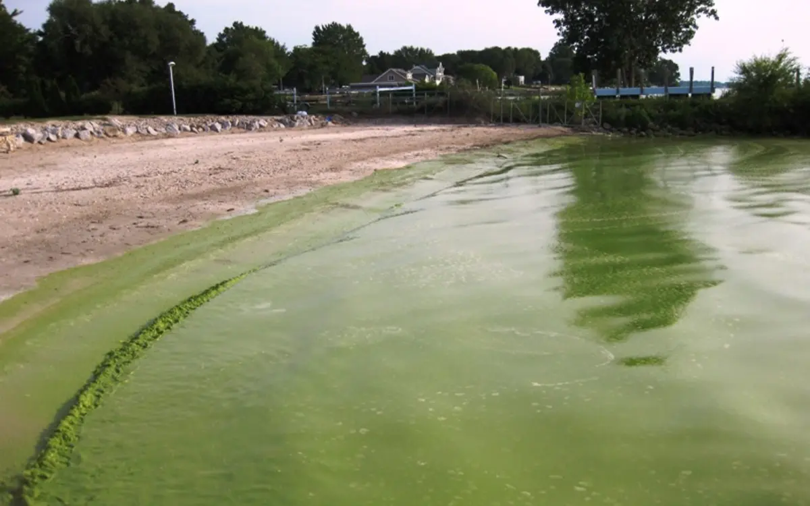
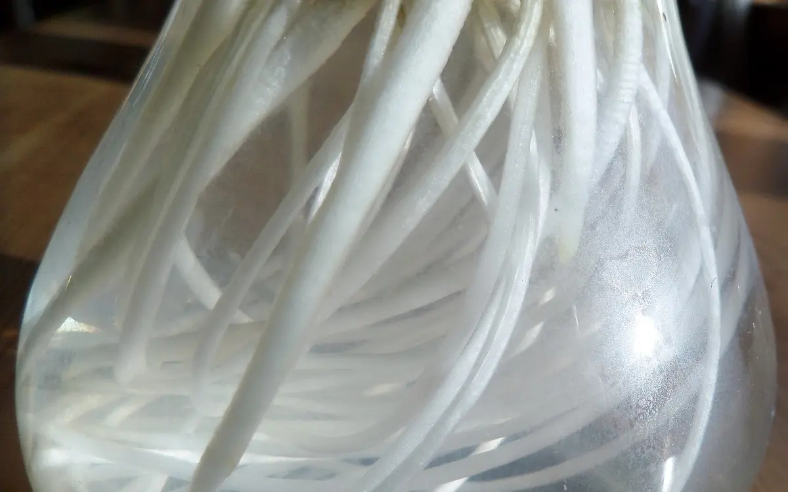
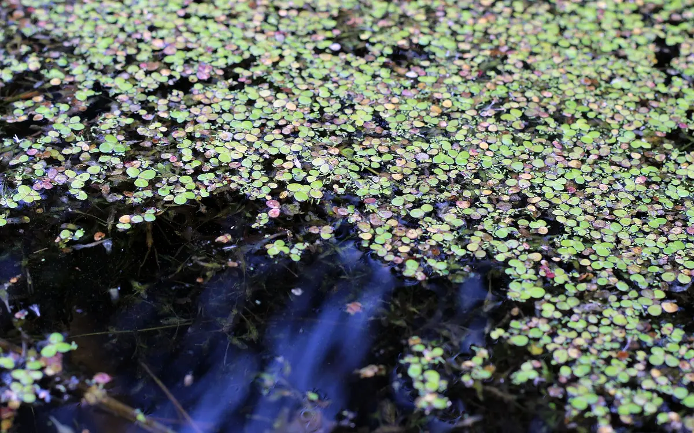

For environmental organizations
Explain a water-quality issue, restoration project or new study to the people who need to understand it. Give readers the context behind the headline and a clear route to the sources.
Environmental science writer
Articles, research summaries, reports and web copy for environmental organizations and technology teams with complicated evidence to explain.
Start with studies, data or a research question.
Environmental science and sustainability communication
Environmental writing is strongest when the writer can enter the source material, recognize what the evidence does and does not support, and still produce something a non-specialist wants to read. Paul combines professional writing with formal study in Environmental Science & Sustainability and research experience focused on harmful algal blooms, freshwater systems, climate patterns, and remediation.
That background is useful whether the source is a scientific paper, a set of monitoring data, an expert interview, a technical report, or a complicated environmental claim that needs careful qualification.
In the regional harmful algal bloom review, the central communication task was to connect monitoring reports with watershed and climate conditions while keeping reporting changes and correlation limits visible. That same care applies when a business needs to explain a promising treatment without implying that laboratory findings prove field performance.
Explain a water-quality issue, restoration project or new study to the people who need to understand it. Give readers the context behind the headline and a clear route to the sources.
Describe what a treatment or product has demonstrated, the conditions it was tested under and what still needs to be established. Connect the science to a buyer's question.
Turn papers, monitoring results and expert interviews into readable articles or summaries while preserving units, comparisons and uncertainty.
Explore the evidence
A short explanation from my Genesee–Finger Lakes HAB analysis. Open the notes to see what survives the translation from dataset to sentence.
Reader facing explanation
In a nine-county regional review, wetter years were associated with more reported harmful algal blooms. The relationship points to a question about watershed conditions; it does not show that rainfall alone caused the blooms.
The analysis compares NYSDEC bloom reports from 2020–2024 with NOAA climate records. Its precipitation comparison uses anomalies and report frequency. Reports are observations, rather than a direct measure of total bloom biomass.
The report identifies a positive association between precipitation anomaly and individual HAB report frequency. That is a reason to examine runoff, nutrients and lake conditions together; it does not isolate a single cause.
Reporting effort and public awareness can influence report counts. A regional correlation cannot establish how a particular lake will respond, and the explanation needs to keep that distinction visible.
Choose by the reader's need
For readers encountering the subject for the first time. A focused story, essential scientific context, definitions where needed and source links that make the explanation checkable.
For teams that need a study, dataset or body of literature organized for a decision. The scope can include a methods summary, relevant findings, limitations, figures and references.
For prospective clients assessing an offer. Explain the mechanism, application and evidence behind the claim, then identify what information is needed for the next conversation.
For a draft that needs a stronger relationship to its evidence. Review claim wording, trace references, identify gaps and explain which questions require a technical reviewer.
The proposal specifies the formats, source review, expert input and revisions included.
How the evidence is handled
Check the design, population or system, comparison, result and limitations. Keep a laboratory finding tied to its test conditions.
Establish units, geographic coverage, collection methods and changes in reporting. Separate an observed trend from an explanation for that trend.
Use expert input to clarify mechanisms and approved claims. Identify where documentation is still needed and return scientific questions for review.
We define the audience and question, organize the source material, agree the structure and develop the draft. Where scoped, the handoff includes linked references and notes on claims that need qualification or an expert answer. Your team approves technical and product claims before publication.
See my environmental research backgroundSelected work
Regional data analysis, a controlled water-hyacinth experiment and a feasibility-focused literature review show different ways of working with environmental evidence.

A nine-county review connecting harmful algal bloom reports with precipitation, temperature, lake history, and watershed runoff conditions.

A constructed-wetland experiment testing whether water hyacinth could remove bloom-supporting nutrients from an induced Microcystis system.

A feasibility-centered review comparing water hyacinth, star duckweed, and parrot’s feather for bloom suppression and cyanotoxin removal.
Before we scope the work
Paul’s strongest direct research background is in harmful algal blooms, freshwater systems, climate-related water risk, phytoremediation, sustainability, and scientific communication. He also works from supplied research and experts on adjacent environmental subjects.
Yes. The process begins by identifying which distinctions and limitations must survive translation, then building the explanation around the reader’s existing knowledge.
Yes. Paul has experience analyzing environmental datasets and synthesizing scientific literature. Statistical or scientific claims remain tied to the source and are not inflated for marketing effect.
I identify what is supported, what needs qualification and what needs an expert answer. A scoped source-review assignment can include linked references and a record of unresolved claims. Your technical reviewers remain responsible for product validation and final approval.
We define the deliverable, audience, source inputs and reviewers before work begins. The proposal specifies the review process and revision scope; research or testing beyond that scope is discussed separately.
A defined first project
Share the subject, intended reader, available sources and deadline. We can begin with one article, research summary, page or defined source-review assignment.